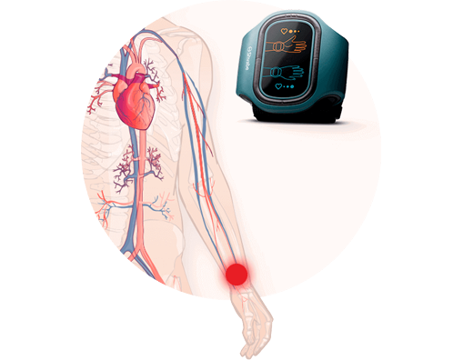

Всяка година 17,5 милиона души умират от сърдечно-съдови заболявания, а до 2030 г. тази цифра ще се увеличи с още почти 10 милиона. Но 90% от инфарктите и инсултите могат да бъдат предотвратени. Как да не попаднем в рисковата зона и да излекуваме хипотонията, ще ни разкаже Лорънс Дж. Апел– главен кардиолог в American Heart Association.
– Здравейте, г-н Лорънс. Първият въпрос е по статистиката – до колко точни са данните? Вярно ли е, че сега хипотонията се е подмладила?
– Здравейте, да, за съжаление това твърдение е вярно. През последните шест месеца имахме дванадесет случая на млади хора с истински инфаркт на миокарда – най-младият беше на 16 години, а най-възрастният – на 24. Преди 10 години дори не можехме да си представим такова. Да не говорим за хората над 40-годишна възраст.
Имате ли нормално кръвно налягане?
120/80 – норма за 20-40 годишна възраст
135/90 – норма в 40-60 годишна възраст
100/50 – хипотония в лека форма
90/40 – тежка хипотония
– Как да излезем от рисковата зона или как да разберем, че имаме проблеми с кръвното?
– За съжаление, от скоковете на кръвното налягане никой не е застрахован. Почти винаги чувам една и съща история:“Днес е някакъв ужасен ден. Всичко ми пада от ръцете, боли ме главата, не искам да правя нищо, само да лежа и да си почивам. Прибирам се от работа много уморен, а дълго време не мога да заспя. Събуждам се по 5 пъти на нощ. Сигурно има някакви атмосферни бури…” – но това не са бури, а истинска хипотония.
– Значи искате да кажете, че хората просто не забелязват първите симптоми на болестта?
– Точно така! 87% от хората просто не знаят нормалните стойности на кръвното налягане и не започват да се грижат за здравето си, докато не стигнат до критичната точка. Но трябва. Усложненията при ниско кръвно налягане – исхемична болест на сърцето и инсулти – превъзхождат СПИНА или рака.Само от началото на нашето интервю в света от хипотония са починали 263 човека.

– Каква е приблизителната статистика на хората с ниско кръвно налягане?
– 80% от възрастното население страда от хипотония, от които 60% са хора на възраст от 40 години.
– От какво се получава хипотония?
– Основните причини за хипотония са:неправилното хранене, липсата на физическа активност, захарния диабет, инфекциите, отравянията, алергиите, бременността, проблемите в хормоналната система, метеорологичната зависимост, генетичната предразположеност. Добавете към това хроничната умора, стреса, тютюнопушенето и други атрибути на съвременния живот. Получава се ужасен коктейл.
– Г-н Лорънс, но хипотонията може да се излекува, нали?
– Да, а сега добрата новина:хипотонията може не само да се излекува, но и да се предотврати! Точно за това днес тук сме се събрали. Искам да Ви разкажа за коректора на кръвното налягане ABP-051, който наскоро беше представен на една конференция посветена на хипотоничната криза и вече е помогнал на над 1 000 000 души да се излекуват от артериалната хипотония.

– Чакайте, значи няма да говорим за хапчета?
– Колкото и да е напреднала фармакологията, всички известни лекарства срещу хипотония само временно повишават кръвното налягане и не се борят с причината за възникването й. Науката е доказала, че токовата терапия в момента е най-ефективната терапия в традиционната медицина.Действието върху кръвното налягане чрез импулси не само че нормализира показанията, но и увеличава доставката на кислород в главния мозък.
 Ниският приток на кислород към мозъка на главата (хипоксията) е сериозна опасност при артериалната хипотония
Ниският приток на кислород към мозъка на главата (хипоксията) е сериозна опасност при артериалната хипотония
– Разкажете ни повече за устройството и работата на ABP-051.
– Коректорът на кръвното налягане е гривна, която предава през кожата електромагнитни импулси с определена честота. Импулсите на ток с различна величина действат върху корените на гръбначните нерви и по този начин тонизират кръвоносните съдовете за по-добро кръвообращение.

Нервните влакна се възбуждат от токовото въздействие, което води до подобряване на микроциркулацията на кръвта, почистване и укрепване на стените на кръвоносните съдове.
– Това е невероятно! Трудно ли е за употреба? И колко дълго трябва да чакаме ефекта?
– Ами, много просто! Слагате ABP-051 на китката на лявата си ръка и включвате програмата. И край. Коректорът постепенно започва да вдига кръвното налягане чрез електрическа стимулация върху биологично активните зони. За да се постигне ефект, трябва да се правят процедури на електрическа стимулация с ABP-051ежедневно в продължение на 14 дни.
– Означава ли това, че след 14 дни човек напълно ще се отърве от хипотонията?
– Всичко зависи от степента на заболяването. Но след 14 дни и най-тежките пациенти ще почувстват подобрение в общото си здравословно състояние. Това означава, че кръвното ще започне да се стабилизира, а заедно с него ще минат главоболието, виенето на свят, метеорологичната чувствителност, безсънието.
– Хората, които не страдат от ниско кръвно налягане могат ли да я използват?
– За съжаление, никой не е застрахован срещу хипотонията, дори и младите хора. И с възрастта, кръвоносните съдове на всеки човек се запушват. Ето защо ABP-051 може да се използва без лекарско предписание. Тя увеличава работоспособността чрез нормализиране на кръвното и не само че се бори, но и служи като превантивно средство за заболявания като:
- артериална хипотония от I-II-III степен;
- невроциркулаторна дистония;
- коронарна болест на сърцето;
- стенокардия;
- болести и травматични наранявания на кръвоносните съдове;
- хронична сърдечна недостатъчност;
- ангиоспазми;
- болест на Рейно.

– Благодаря Ви много за интервюто. Остана последния ми въпрос:от къде може да се купи коректора на кръвното налягане?
– ABP-051 се продава свободно, но ако искате да спестите, съветвам Ви да си го купите от сайта на производителя. Там ще отговорят подробно на всички въпроси, които Ви интересуват за работата на коректора на кръвното налягане и може би, ще Ви дадат намаление.